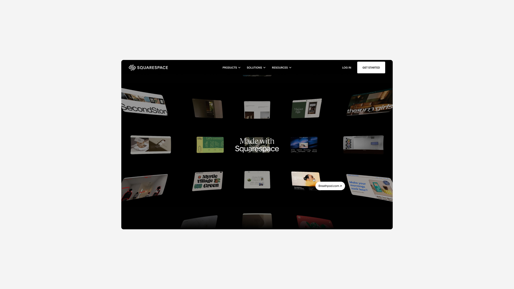
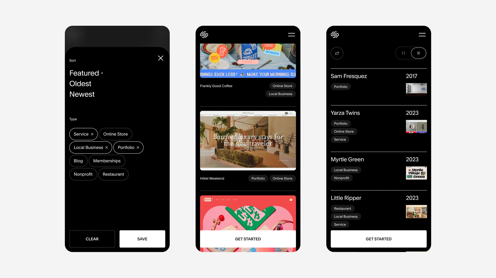
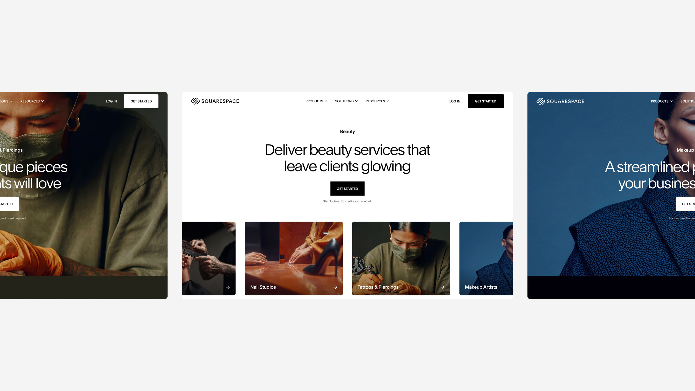

This is highly confidential work. Please do not share or distribute without explicit permission. Thank you!!!
In my most recent year at Squarespace, I moved from using AI as a shortcut to establishing AI-native design infrastructure for my team. From coauthoring the agentic onboarding for our new AI-native product to creating shared agents and skills for my team, as well as leading the process for prototyping directly in our production repos, my impact evolves daily. I'm excited to give a preview of this work. This is merely a sample, reach out to see more and please do not share with others without permission.
What started as individual experiments with skills and agents, quickly transformed into reusable team tools. Early 2026, Squarespace released a new internal app hosting platform. Highly useful, but very technical for PMs and designers with no coding experience to navigate.
I created and shared across the company, a set of skills to aid with deploy processes and troubleshooting. Before non-engineer access to our sqsp repositories, I also recreated a component and styles starter kit for anyone needing to vibe code frontend prototypes for the .com.
Historically, my design team (including myself) has dedicated hours to rote, non-designing processes I saw opportunity to automate. I continue to experiment with agent automations, finding what works (and doesn't quite work) when it comes to leveraging AI workflow improvements. Here are a few of the most successful.
Business Affairs Assistant
Examines Figma files, including image assets and copy, and formats information into a robust approvals tracking sheet for BA review. Saves hours of manual sheet creation and maintenance.
Amplitude Dashboard Agent
Easily and quickly create new dashboards. Unlocks frictionless process to perform analysis across dashboards. Plus, standardizes dashboard formatting and configuration.
Figma Content Updater
Alleviates manual work to update all breakpoints in Figma designs during feedback loops with project stakeholders when content updates are provided across sheets, docs, Slack, Jira, and more.

I coded the agent logic model and defined the visual design system for onboarding into a new workspace for Squarespace's new, unreleased AI-native product. In collaboration with my design coauthor, Tracey Chan and principal engineer Dave Myers, we shipped a fully functional proof of concept in just 5 days for alpha testing.
Currently, we are building a pre-beta framework to systematize and shape the model's understanding of how to adapt onboarding for pros, novices, and everyone in between. Additionally, I'm auditing and refining the end to end journey with visual and interaction polish across the marketing landing page for the new product, initial input entrypoint, onboarding flow, into a fully provisioned, personalized workspace.

Developing the go to market strategy and phased rollout has required the same speed as building the product itself, and an even higher level of craft and polish. Alongside this new product release, we will also unveil an evolution of our brand expression. Combining Figma concept exploration with rapid code prototyping and experimentation, I've been defining the new way we leverage frontend interaction and storytelling for an entirely new top of funnel experience and design system. This work has been a close collaboration between myself and principal designer, Virginie Delannoy.
More work to come, stay tuned! Please do not share any unreleased work without my permission. And if you've made it this far, thanks for taking the time!